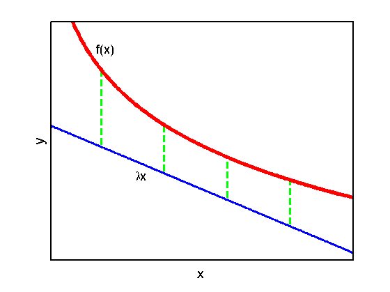

Illustration of a conjugate function
function conjugateFunction
f = @(x) -log(5*x) - 5;
domain = 0.01:0.01:5;
offset = 0.04;
t = @(x) -(1/3)*x + f(3)+1-offset;
figureA;
printPmtkFigure('conjugateFunctionA');
figureB;
printPmtkFigure('conjugateFunctionB');
function figureA
setup;
t1 = @(x) t(x) - 0.5;
plot([1,1],[t1(1),f(1)],'--g',...
[2,2],[t1(2),f(2)],'--g',...
[3,3],[t1(3),f(3)],'--g',...
[4,4],[t1(4),f(4)],'--g','LineWidth',3);
plot(domain,t1(domain),'-b','LineWidth',3);
plot(domain,f(domain),'-r','LineWidth',5);
annotation(gcf,'textbox',[0.3392 0.3309 0.05723 0.09903],...
'String',{'\lambdax'},...
'FontSize',18,...
'FitBoxToText','off',...
'LineStyle','none');
end
function figureB
setup;
plot(domain,t(domain),'-b','LineWidth',3);
plot(domain,f(domain),'-r','LineWidth',5);
annotation(gcf,'textbox',[0 0.68 0.06955 0.07246],...
'String',{'-f^*(\lambda)'},...
'FontSize',18,...
'FitBoxToText','off',...
'LineStyle','none');
annotation(gcf,'textbox',[0.63 0.23 0.2 0.1014],...
'String',{'\lambdax - f^*(\lambda)'},...
'FontSize',18,...
'FitBoxToText','off',...
'LineStyle','none');
end
function setup
figure; hold on;
set(gca,'XTick',[],'YTick',[],'box','on','LineWidth',2);
axis([0.2,5,-9,-6])
xlabel('x','FontSize',20); ylabel('y','FontSize',20);
pdfcrop;
annotation(gcf,'textbox',[0.238 0.7681 0.05723 0.09662],...
'String',{'f(x)'},...
'FontSize',18,...
'FitBoxToText','off',...
'LineStyle','none');
end
end
